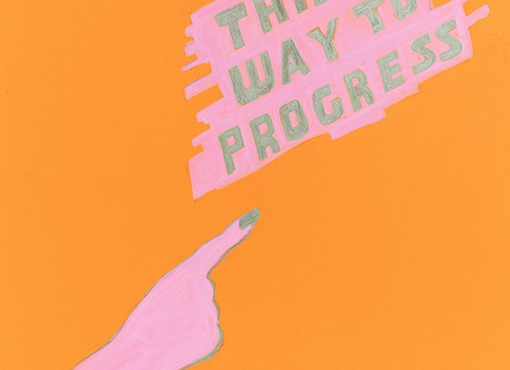

Drink & Draw: Draw Your Demands
Come have a drink with us!
Join us for Drink & Draw on February 11.
In this session, we will make posters for whatever you want to say.
Posters are a way to claim space, share a message, and make your voice visible. This Drink & Draw session focuses on drawing posters and saying whatever you need to.
We’ll have examples of posters on hand for reference and inspiration, and we can make some one-color Riso copies for those who want to help wheatpaste the world.
Pay what you can — suggested donation: $10–$20.
RSVP is encouraged so we can make sure someone is coming; drop-ins are also welcome.
Drink & Draw is a low-key, drop-in social workshop devoted to drawing practices. There are no pretensions, no prerequisites, and newcomers are always welcome. Bring a sketchbook and basic drawing materials—and invite your friends. Drink & Draw takes place on the second Wednesday of every month and features a special theme and guest artist. Suggested donation: $10–$20. We provide the beer — you just bring yourself (and your friends and family; children are always welcome).